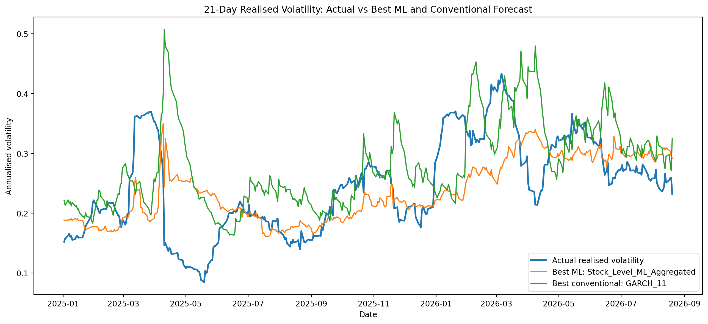
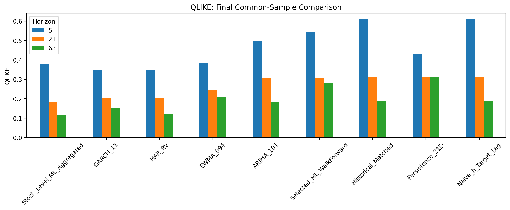
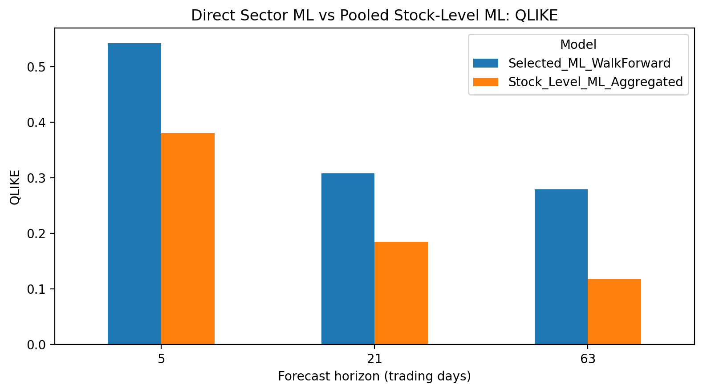

Construct the sector
Build a market capitalisation weighted materials return series from the selected 50 stocks and calculate forward realised volatility targets.
RESEARCH PROJECT AUSTRALIAN EQUITIES
A common sample comparison of conventional time series models and machine learning, using 5, 21 and 63 trading day horizons.
The project constructs a daily Australian materials sector series from 50 equities, then forecasts realised volatility using historical benchmarks, EWMA, HAR-RV, ARIMA, GARCH and two machine learning approaches.
All headline results below come from the same final evaluation sample at each horizon. The primary comparison is 21 trading days; 5 and 63 days test whether the finding holds at other lengths.
COMMON SAMPLE EVALUATION
Lower QLIKE, MAE and RMSE are better. Correlation measures how closely predictions track changes in observed volatility.
| Model | QLIKE ↓ | MAE ↓ | RMSE ↓ | Correlation ↑ |
|---|
Values are rounded for display. Each horizon uses its own common set of test origins; comparison across horizons should account for this difference. Source: final common sample metrics in the supplied project.
Build a market capitalisation weighted materials return series from the selected 50 stocks and calculate forward realised volatility targets.
Compare conventional volatility models with direct sector machine learning and predictions pooled from individual stocks.
Assess predictions on shared dates using QLIKE as the primary loss, with absolute error, squared error and correlation as supporting measures.
The stock level branch refits every 21 origins for computational feasibility; direct sector machine learning refits daily in the final walk forward evaluation. This difference matters when interpreting their relative performance.



Charts are reproduced from the project’s final figures. This page summarises an academic forecasting study; it is not an investment forecast or trading tool.